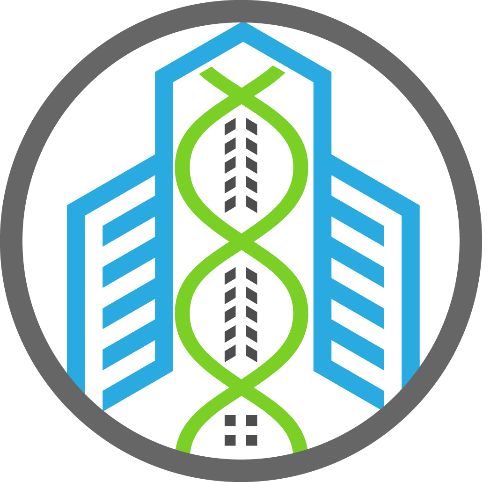

cozie

An AI-enhanced spatial recommendation engine that matches building occupants to suitable workspaces based on comfort preferences
spacematch info site
spacematch info site
Spacematch

A open data set of hundreds of non-residential buildings from around the world with various temporal data mining techniques implemented
data set
data set
Building Genome Project

SDE Learning Trail is a simple, easy to use web application to collect comfort feedback from building occupants and visitors while they interact, learn and engage with SDE4.
learning trail info site
learning trail info site
Learning Trail

Project 5